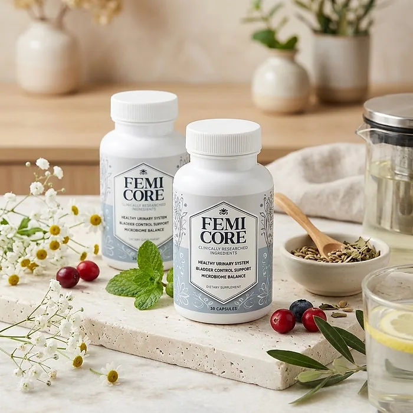

What Is FemiCore And How Does It Work?
FemiCore is a dietary supplement in capsule form designed to support a healthy urinary system, bladder control, and microbiome balance for women who want to address the sudden urges, frequent bathroom trips, and small leaks that can build up with age, childbirth, and menopause through a natural, dependable approach — without complicated routines or temporary quick fixes.
It utilizes a simple daily capsule that combines Mimosa Pudica, Cranberry, Bearberry, Berberine, and five Lactobacillus probiotic strains to support bladder comfort, a balanced urinary microbiome, and confident days, helping the body maintain its natural balance throughout the day.
The ingredients in FemiCore are herbal extracts and probiotic strains that, according to the official website, form an optimally dosed proprietary blend carefully mixed to create a bladder-supporting formula, particularly for women who prefer one simple capsule a day over multiple products or complicated plans.
Rather than acting as a short-lived fix like a pad or a protective liner, FemiCore focuses on supporting the urinary system from within, as the official website explains, by helping to repopulate the urinary microbiome with good bacteria, working gradually alongside daily routines.
With consistent daily use, a formula of this kind is intended to help with fewer sudden urges, more control, and greater confidence during the day and at night, especially when combined with pelvic floor exercises, enough water, and limiting caffeine and alcohol.
From a practical standpoint, FemiCore is a daily urinary support capsule designed to support wellness from within — helping you feel comfortable, stay active, and remain in control of your health.
Made in the USA with foreign and U.S. ingredients in an FDA-registered, GMP-certified facility, according to the product label, FemiCore is designed for regular daily use, with a formula described as natural, non-GMO, and free of stimulants, focusing on safety, purity, and quality for those seeking a natural, non-prescription route to bladder wellness.
FemiCore Ingredients
Every capsule of FemiCore contains a 350 mg herbal blend and a 50 mg probiotic blend, as listed on the Supplement Facts panel, chosen to support the urinary system, bladder control, and microbiome balance as part of a consistent daily routine:
Mimosa Pudica Seed Extract: A tropical plant seed that the official website includes to support a clean, balanced urinary tract.
Cranberry Extract (standardized to 30% proanthocyanidins): A well-known berry for urinary tract health.
Bearberry (Arctostaphylos uva-ursi) Leaf: A traditional herb used to support bladder comfort.
Granular Berberine Hydrochloride Extract 8%: A plant compound from bark and root that supports microbial balance.
Lactobacillus crispatus LCr86 and Lactobacillus acidophilus LA85: Probiotic strains naturally found in a healthy female microbiome.
Lactobacillus plantarum Lp05, Lactobacillus gasseri LG08, and Lactobacillus casei LC89: Three more strains that complement the probiotic blend.
Together, these ingredients work synergistically to support urinary health, bladder control, and microbiome balance from within. The label does not give the amount of each ingredient inside the two blends. The other ingredients are gelatin (capsule), brown rice flour, magnesium stearate, olive oil, and silicon dioxide.
FemiCore is designed for daily use, offering a natural, non-prescription approach to supporting bladder wellness, without stimulants or complicated routines.
FemiCore Side Effects
FemiCore is generally considered well tolerated and is designed for adult women of different ages and lifestyles who are looking for a safe, natural, and balanced approach to bladder wellness, especially those who prefer an easy one-capsule daily routine to support urinary comfort, control, and confidence without resorting to risky solutions with severe side effects.
The official website describes the formula as natural, non-GMO, and stimulant-free, and FemiCore is made in the USA in an FDA-registered, GMP-certified facility, according to the product label, reinforcing consistency, safety, and reliability.
With no widespread reports of serious side effects, FemiCore is generally considered a well-tolerated option. A few points deserve attention: bearberry is traditionally used for short periods and is not recommended for people with kidney problems; berberine can lower blood sugar and interact with several medications; and the probiotics may cause mild, temporary digestive changes in the first days. The capsule is made of gelatin. Burning when urinating, fever, back pain, or blood in the urine need a doctor's evaluation. It is not intended to diagnose, treat, cure, or prevent any disease, and individual results may vary.
According to the label, pregnant or nursing mothers, children under the age of 18, and individuals with a known medical condition should consult a physician before using FemiCore. Anyone taking prescription medication should also talk to a doctor first, ensuring it fits safely within their personal wellness plan.
FemiCore Dosage
The recommended FemiCore dosage is one capsule a day with 6 to 8 oz of water, and it is designed to fit easily into a daily routine, making consistency simple and convenient. Formulated as an easy daily capsule, it requires no powders to mix, no drinks to prepare, and nothing to measure.
The recommended approach, as printed on the label, is for adults to take one (1) capsule daily, or as directed by a healthcare professional. The official FAQ suggests taking FemiCore every morning with a big glass of water, at the same time each day, which allows its ingredients to work consistently.
For best results, consistency is key. Each bottle contains 30 capsules, a one-month supply, and the refund policy recommends using the product for at least 3 months before deciding, since urinary and microbiome support builds gradually.
There is no need for complex schedules or multi-step routines. One simple daily capsule is designed to build lasting support gradually alongside pelvic floor exercises, steady hydration through the day, and fewer bladder irritants such as caffeine. The label also advises storing the bottle in a cool, dry place and not using it if the safety seal is damaged or missing.
As with any dietary supplement, it's important not to exceed the recommended dose and to check the label on your bottle. FemiCore works best when used regularly, combined with proper hydration, balanced nutrition, and healthy daily habits.
FemiCore – Refund Policy
You can order FemiCore with confidence, knowing that every purchase is protected by a 60-day money-back guarantee counted from the day the package is delivered. This allows you to try the formula and decide if it delivers the support you expect.
According to the refund policy on the official website, customers who are not fully satisfied can request their money back within 60 days of delivery. The policy recommends using the product for at least 3 months before deciding, and asks customers to send back all the bottles, whether they are empty, opened, or sealed, together with the packing slip. The return shipping cost is paid by the customer.
How the refund process works: If you decide FemiCore is not right for you, email customer support with "Refund Request" in the subject line, then send all the bottles to 285 Northeast Ave, Tallmadge, OH 44278, with a note containing your full name, email, and order number. Once the package is received, your refund is processed, and you receive an email confirming it.
Customer Support Contact Information: contact@femicore-product.com, as printed on the product label and listed on the official website. Order questions can also be sent to BuyGoods, the retailer.
Refund Processing Time: According to the policy, processing takes between 5 and 10 days, and the time for the amount to appear on your statement depends on your bank or card company.
This refund policy is designed to give customers a clear and transparent experience when trying FemiCore.
FemiCore – Where To Buy
FemiCore is sold through its official website, so if you decide to try it, it's important to be careful about where you purchase it. The official website is the only sales channel the manufacturer lists, and it does not point to marketplaces such as Amazon, eBay, or Walmart.
Listings on third-party platforms may look similar but cannot be verified as authentic, raising concerns about safety, quality, and probiotic freshness. Products purchased outside the official source may not be covered by the 60-day money-back guarantee.
For this reason, it makes sense to purchase FemiCore only through the official website. Buying directly from the official source ensures you receive the authentic original product, made in the USA, with access to customer support and the full guarantee. According to the official website, every order is a one-off purchase with no hidden autoship, and orders are processed by BuyGoods, the retailer named on the site.
To avoid counterfeit batches and ensure maximum quality, always verify that you are ordering from the official FemiCore website before completing your purchase.
To ensure you’re getting the authentic product, most users choose to visit the official website.
Is FemiCore A Scam?
Based on what the official website and the product label disclose, FemiCore does not appear to be a scam. It is a real capsule supplement, sold through an established retailer, and formulated to support a healthy urinary system, bladder control, and microbiome balance as part of a consistent routine.
The ingredients used in FemiCore — Mimosa Pudica, Cranberry, Bearberry, Berberine, and five Lactobacillus probiotic strains — are known in the wellness field, and the label publishes a Supplement Facts panel with the full ingredient list, the named probiotic strains, and the total amount of each blend for transparency.
In addition to its formula, FemiCore is made in the USA in an FDA-registered, GMP-certified facility, according to the product label, which also identifies the distributor, with an address in Tallmadge, Ohio, and a support email, with a focus on safety, purity, and consistency.
The official website publishes no written customer testimonials, only an overall rating, so this review does not quote any. A fair point of criticism is that the references page also shows the labels of two unrelated products, and that the bonus guides have little to do with bladder health. Results vary from person to person, and no supplement replaces a medical evaluation of persistent urinary symptoms.
FemiCore is backed by a 60-day money-back guarantee, and orders are one-off purchases with no hidden autoship. The refund steps, including sending back all bottles and paying the return shipping, are published on the official website, which gives customers a clear path if the product does not meet their expectations.
If you're looking for a simple daily capsule to support bladder control, comfort, and confidence without complicated routines, FemiCore is worth considering — especially when purchased directly from the official website.
For those who want to verify product details or check current availability, the official FemiCore website remains the safest option.

Check Availability On Official Website